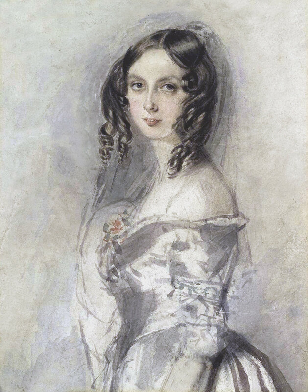

Основные достижения
Оглавление
Первая программаПонятие цикла и рабочей ячейки
Концепция универсального компьютера
Предвидение искусственного интеллекта

Первая программа
Написала алгоритм для вычисления чисел Бернулли на аналитической машине Бэббиджа. Этот код признан первой в истории компьютерной программой.
Понятие цикла и рабочей ячейки
Ввела в научный обиход базовые термины программирования — такие как «цикл» (повторение набора инструкций) и «рабочая ячейка памяти».
Концепция универсального компьютера
Поняла, что аналитическая машина может обрабатывать не только цифры, но и любые другие данные, если задать правила (например, музыку или текст).
Предвидение искусственного интеллекта
Высказала идею о том, что машины способны выполнять сложные логические операции, но не могут мыслить самостоятельно или создавать что-то новое без участия человека.